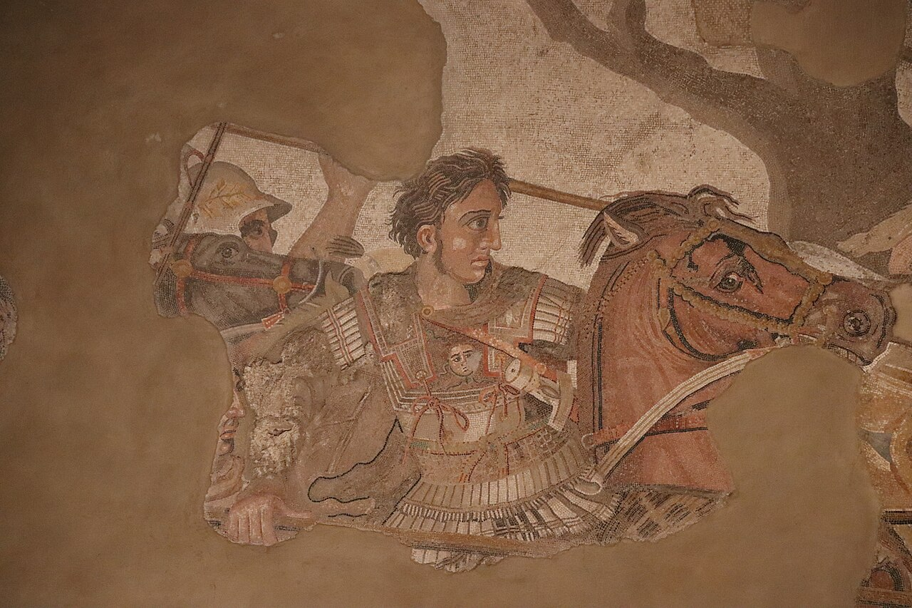
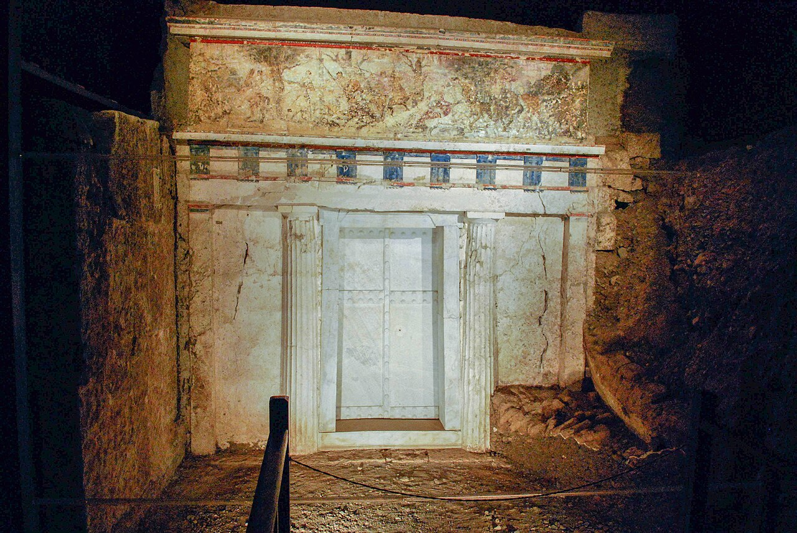
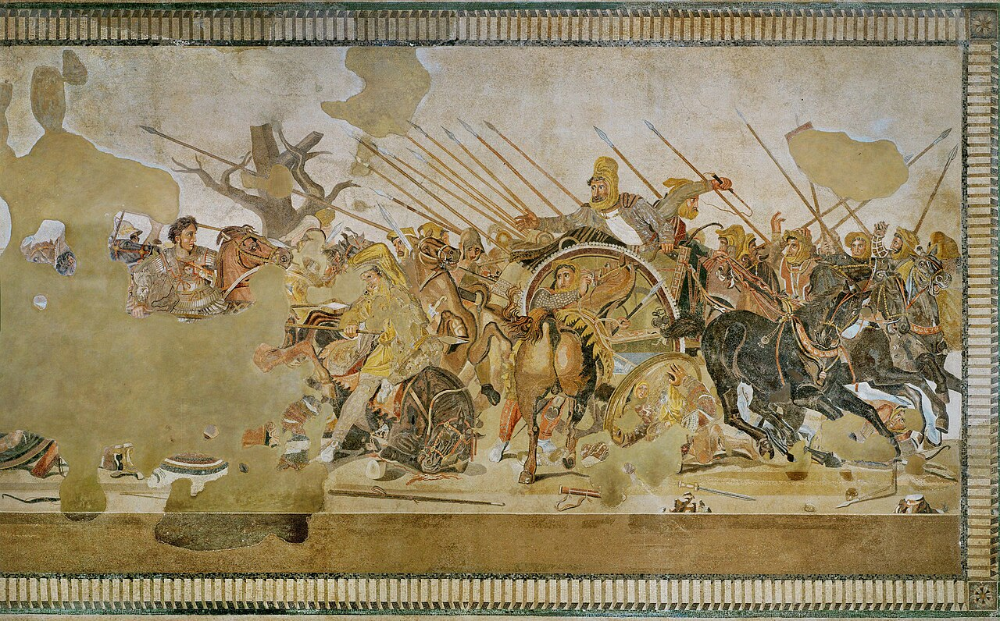
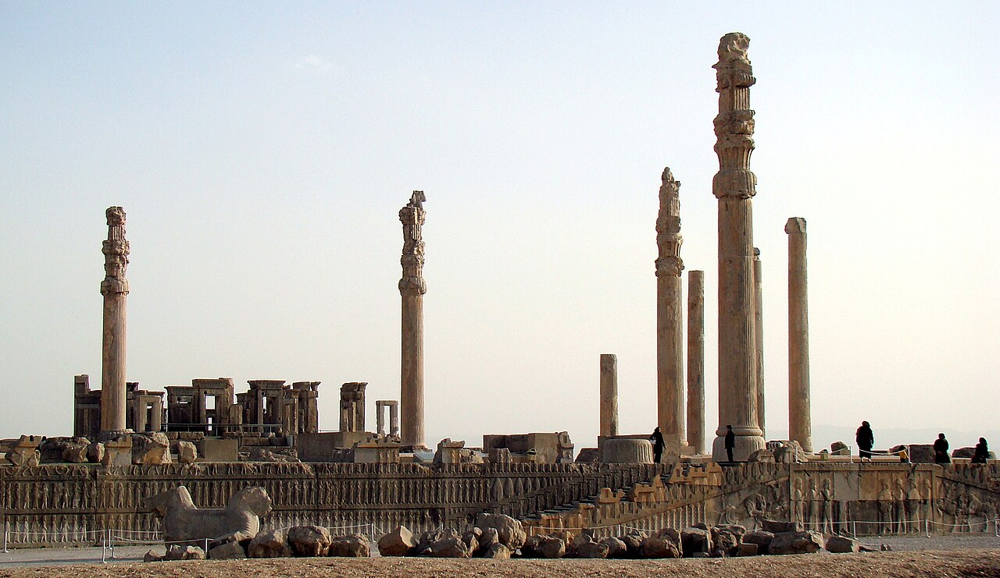
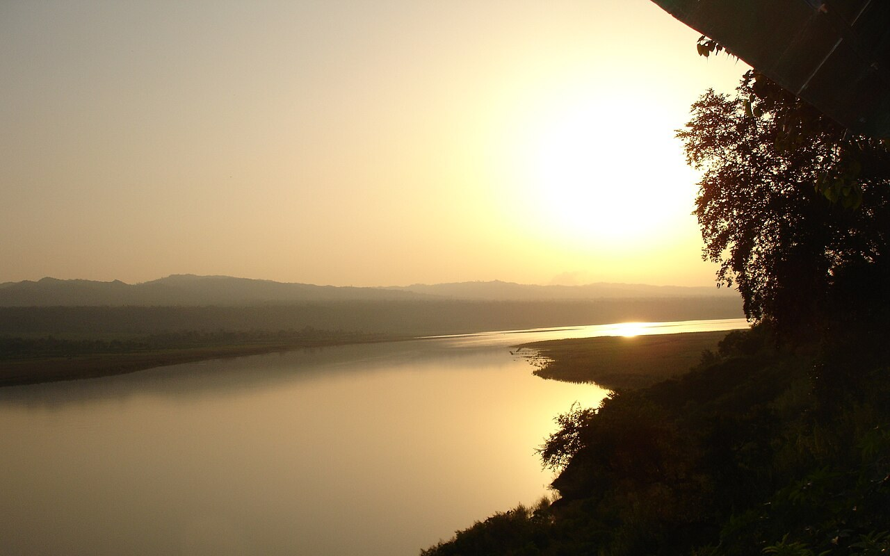
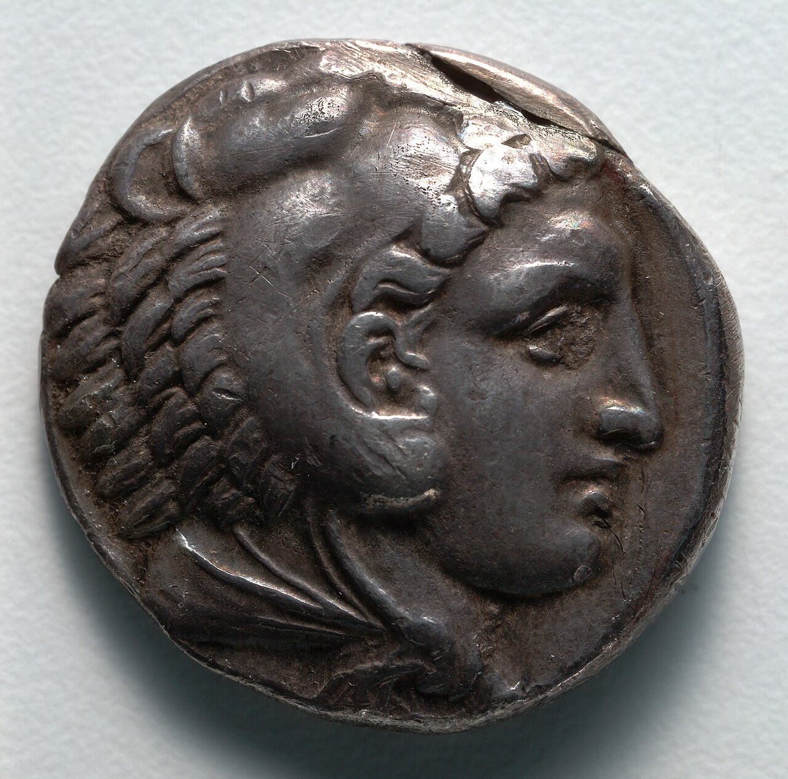
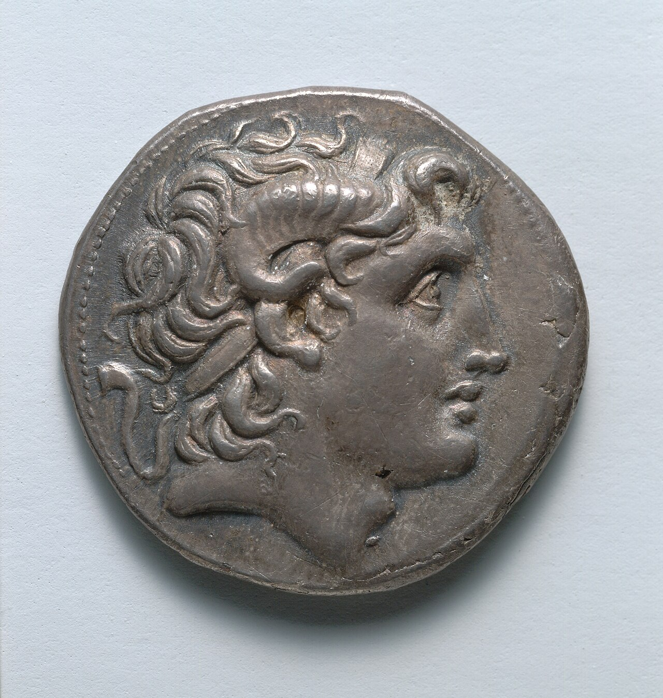
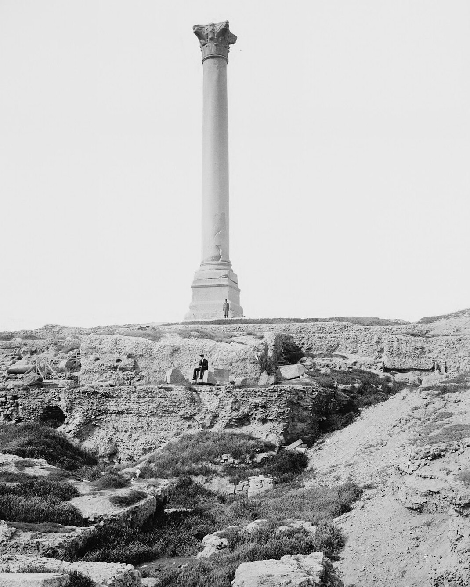

歴史・地理 History & Geographyアレクサンドロスは、 なぜ10年で インドまで 進めた？ ギリシャの北の小さな王国の若い王が、10年ほどで、エジプトからインドの入り口までを駆け抜けました。速さの秘密は、父が作った軍と、もうひとつ、敵だったペルシア帝国そのものにありました。遠征の地図と10年の流れ図で、その道をいっしょにたどってみませんか。
2026.11.09 UP 約8分で読める 文：SOMOSOMO編集部
写真：モザイク（部分）／Gary Todd（2019年、パブリックドメイン）
Previously
前回は、市民が民会で決め、くじで役を選ぶアテネの民主主義の話でした。そのアテネも、ペロポネソス戦争を経て力を落としていきます。そして前338年、カイロネイアの戦いで、アテネはテーベとともに北の王国マケドニアに敗れます。このあと、ギリシャの行方を決めるのはマケドニアになりました。
インダス川の東、ヒュファシス川（いまのインド北部のビアス川）のほとり、前326年。8年前にギリシャの北を出た兵たちが、王の前で、これ以上は進まないと言い出しました。王は3日間、天幕にこもります。それでも兵の気持ちは変わらず、王はとうとう引き返すことを決めました。
王の名はアレクサンドロス（英語読みでアレクサンダー）。ギリシャの北の王国マケドニアの王で、まだ30歳前後でした。20歳で王になってから10年で、エジプトからインドの入り口までを従えています。車も鉄道もない時代に、アレクサンドロスは、なぜ10年でインドまで進めたのでしょうか。
In a word
父の軍 で勝ち、ペルシアのしくみ を丸ごと引き継いだから。
01
The Father's Army
速さのもとは、 父が作った 軍にあった
話は父のフィリッポス2世から始まります。彼が王になった前359年、マケドニアは北の部族との戦いで、前の王と兵の多くを失ったばかりでした。フィリッポスは若いころ、ギリシャの強国テーバイに人質として置かれ、名将エパメイノンダスのもとで戦い方を学んでいました。
フィリッポスは軍を作り直します。歩兵には、サリッサと呼ばれる長い槍を両手で持たせました。長さは5〜7メートル。それまでのギリシャの歩兵の槍は2〜3メートルでした。何列もの槍先が前に突き出す密集隊（ファランクス）は、敵を正面で受け止める壁になります。
壁が敵を止めているあいだに、横から騎兵が突っ込んで陣を崩します。よく、金床（かなとこ）と金づちにたとえられる組み合わせです。さらにフィリッポスは、城壁を崩す攻城の道具や、石や矢を飛ばす兵器もそろえました。歩兵・騎兵と、こうした城攻めの道具を扱う兵を組み合わせて戦う、当時としては新しい軍でした。
前338年、この軍がカイロネイアでアテネとテーバイの連合軍を破ります。前回の終わりの戦いです。18歳のアレクサンドロスも、左の翼を率いて加わっていました。フィリッポスはギリシャの国々をまとめた同盟の長となり、次の目標を東の大国ペルシアに定めます。

土の中に眠っていた王の墓 ギリシャ北部のヴェルギナ（古代マケドニアの都アイガイ）の大きな塚の中で見つかった墓の正面です。扉は大理石で、上には色の残る絵の帯が見えます。フィリッポス2世の墓とする説が有力です。写真：Facade of Philip II tomb Vergina Greece ／Sarah Murray（2009年、パブリックドメイン）
ところが前336年、フィリッポスは自分の護衛に暗殺されます。跡を継いだのが、20歳のアレクサンドロスでした。少年のころ、哲学者アリストテレスに16歳まで学んだ王子です。
王の死を聞いて、ギリシャの国々は次々に背きました。アレクサンドロスはすぐに兵を出し、前335年、反乱を起こしたテーバイを攻め落とします。6,000人が殺され、生き残った3万人は奴隷として売られ、町は神殿などを除いて焼き払われました。
ほかの町への見せしめだったと考えられています。こうしてギリシャという背中を固めてから、王は東へ向かいます。
02
Inheriting an Empire
王を倒せば、 帝国が まるごと 手に入った
前334年、アレクサンドロスはヘレスポントス海峡（いまのダーダネルス海峡）を渡ります。兵は約4万8,000、騎兵は約6,100（推計の一つ。古代の記録はもっと少ない）。相手は、第5話で見たペルシア帝国です。王の道でつながり、州ごとに長官（サトラップ）が税を集めるしくみが、200年近く動いていました。
Fig.01 ギリシャの北から インドの入り口まで
地中海
カスピ海
アラビア海
インダス川
ペラ
グラニコス
サルディス
イッソス
テュロス
アレクサンドリア
ガウガメラ
バビロン
スーサ
ペルセポリス
バクトラ
マラカンダ
ヒュダスペス
ヒュファシス
主な戦い・引き返した川
都・新しい町
そのほかの町
行き（前334〜前326年）
帰り（前326〜前323年）
見どころは、行きの道が、エジプトに寄ってからメソポタミア、ペルシアの都へと、ペルシアの国の中をなぞっていること。インダス川をこえた先で引き返しています。地図は Natural Earth（パブリックドメイン）から作りました。
最初のグラニコス川の戦いで勝つと、小アジア（いまのトルコ）の州の都サルディスは、戦わずに門を開きました。前333年11月には、イッソス（いまのトルコ南東部）で、ペルシア王ダレイオス3世の大軍と初めてぶつかります。密集隊が受け止め、騎兵が突き崩し、ダレイオスは戦場から逃げました。

逃げる王と、追う王 イッソスの戦いを描いたとされるモザイク（小さな石を並べた絵）です。左の馬上がアレクサンドロス、右の車の上で振り返るのがダレイオス3世とされます。前120〜前100年ごろの作で、イタリアのポンペイの家の床を飾っていました。扉の写真は、この左の部分です。写真：Alexander (Battle of Issus) Mosaic ／作者不明（前100年ごろ、パブリックドメイン）
ここでアレクサンドロスは、逃げた王をすぐには追いませんでした。先に地中海の岸を南へ進み、ペルシアの船団が使う港を一つずつ押さえます。背中を海から突かれないための判断でした。島の上の町テュロス（いまのレバノン）は、浅い海に1キロほどの土手を築いて攻め落としました。
テュロスと、その先のガザでは、兵になれる年の男たちが殺され、女性と子どもは奴隷に売られました。一方、ペルシアの支配を嫌っていたエジプトは、アレクサンドロスを解放者として迎えます。彼はナイル川の河口近くに、自分の名をつけた町アレクサンドリアを開きました。
前331年10月1日、ガウガメラ（いまのイラク北部）で2度目の決戦。ダレイオスはまた逃げ、翌年、東の州の長官ベッソスの手下に殺されます。ここから、ペルシアのしくみが、アレクサンドロスの味方として働き始めます。
バビロンに入る前、アレクサンドロスは「あなたたちの家には入らない」と町に伝えた、とバビロンの天文日誌（夜空と町の出来事を記した粘土板）にあります。ダレイオスの将軍マザイオスが降ると、そのままバビロンの州の長官に据えました。
町を壊さず、長官を残せば、税を集める役人も、道も、倉の金銀も、そのまま動き続けます。ペルシアの州のしくみは、上に立つ王が代わっても回るようにできていました。だから決戦に一つ勝つたびに、広い土地がまるごと手に入りました。
03
Beyond the Empire
しくみが 動かない土地で、 速さは止まった
アレクサンドロスの軍は、ペルシアの王の道を通って、儀式の都ペルセポリスへ向かいます。前330年、町に入った兵は何日も略奪を続けました。数か月後、宮殿は火に包まれます。前480年にペルシアがアテネを焼いたことへの仕返しだったのか、酒宴の勢いだったのか、理由はいまもはっきりしません。

石の柱だけが残った ペルセポリスの大広間（アパダナ）の跡です。屋根を支えた木の部分は火で焼け落ち、細く高い石の柱と、低い壁や土台が残りました。写真：Apadana2008 ／O.Mustafin（2008年、パブリックドメイン）
ペルシアの側から見ると、アレクサンドロスは英雄ではありません。ペルシアの古い宗教ゾロアスター教の、のちの時代の書物は、彼を「呪われたアレクサンドロス」と呼びました。神殿を壊し、聖典を焼いた者として語り継いだのです。
その一方でアレクサンドロスは、ペルシアの王らしい装いを取り入れ、目上の人にひれ伏すペルシアの礼も宮廷に持ちこもうとしました。マケドニアの古い仲間は反発します。酒の席で王を責めた側近クレイトスを、王は自分の手で殺してしまいました。
東の州では、しくみを引き継ぐのに手間どりました。いまのアフガニスタンやウズベキスタンにあたる中央アジアでは、ベッソスや地元の有力者スピタメネスが降らず、戦いは前329年から前327年まで続きます。長官が従わない土地では、しくみは動きませんでした。
前326年、インダス川を渡ったアレクサンドロスは、ヒュダスペス川（いまのパキスタンのジェーラム川）のほとりで、この地の王ポロスと戦います。勝ったあと、ポロスを王のまま残し、土地を足して任せました。ポロスは従い、ここではやり方がうまく働きました。
ただ、その先には、引き継げるしくみがありません。アレクサンドロスが来たころ、インダス川の向こうにペルシアの支配の跡はなかったとされます。東のガンジス川の流域には、大軍と多くの戦象を持つナンダ朝の国があると伝わっていました。
長年の遠征に疲れ、故郷の家族を恋しがっていた兵が、進むのを拒んだのは、その手前のヒュファシス川でした。

引き返した川 インド北部を流れるビアス川、古代ギリシャ人がヒュファシス川と呼んだ川です。インド北部の町デーラ・ゴーピプルの近くで撮られた1枚で、兵が引き返した場所そのものではありません。写真：Beas river bank ／Prashant uppal（2006年、パブリックドメイン）
帰り道は、インダス川を船で下り、海ぞいのゲドロシアの砂漠（いまのパキスタン南西部からイラン南東部）をぬける苦しい道でした。多くの兵を失い、前324年、ペルシアの都の一つスーサにたどり着きます。
Fig.02 即位から死まで、 13年の流れ
前336年 20歳で王に 父フィリッポス2世が暗殺される 前334年 海峡を渡る グラニコス川で勝ち、サルディスが門を開く 前333年 イッソスの戦い ダレイオス3世が逃げる 前332〜前331年 海岸とエジプト テュロスを落とし、アレクサンドリアを開く 前331年 ガウガメラの戦い バビロンに入り、長官を残す 前330年 ペルセポリス炎上 ペルシア帝国が終わる 前329〜前327年 中央アジア 降らない土地で手間どる 前326年 ヒュファシス川 兵が進むのを拒み、引き返す 前323年 バビロンで死去 32歳。帝国は将軍たちの争いへ
見どころは、イッソスからペルセポリスまでの足かけ3年で帝国の中心部が手に入ったのに、中央アジアの一角にも同じくらい（前329〜前327年）かかったこと。長官が従い、しくみが動いた土地では速く進めました。
04
After Alexander
帝国は割れ、 ことばと 町が残った
前323年6月、アレクサンドロスはバビロンで熱を出し、32歳で亡くなりました。毒を盛られたという話も古くからありますが、古代の歴史家の多くも、それを確かな話としては扱っていません。死の床で、国をだれに残すのかと聞かれ、「最も強い者に」と答えたという伝えがあります。
そのとおり、将軍たちの長い争いが始まります。彼らは後継者（ディアドコイ）と呼ばれます。前301年のイプソスの戦いで、帝国が一つに戻る道が閉ざされたことが決定的になりました。残ったのは、エジプトのプトレマイオス朝、シリアからイランにかけてのセレウコス朝、マケドニアのアンティゴノス朝などの国々です。
東の端では、インドの側が巻き返しました。前322年ごろ、インドでマウリヤ朝を開いたチャンドラグプタは、インダス川の流域に置かれたマケドニアの州を取りこみます。セレウコス朝を開いたセレウコスは、その土地をゆずり、かわりに戦象500頭を受け取りました。
Fig.03 王の帝国より、 後継者の国が 長く続いた
アレクサンドロス前336〜前323年 13年
アンティゴノス朝前294〜前168年 126年
セレウコス朝前312〜前63年 249年
プトレマイオス朝前305〜前30年 275年
見どころは、アレクサンドロス自身の帝国が王の即位から数えても13年なのに、後継者の国々は100年をこえて続いたこと。3つの国は、どれも最後はローマに敗れるか、ローマに組みこまれました。
国は割れても、ギリシャのことばと文化は残りました。後継者の王たちも役人もギリシャ語を使い、地中海から中東まで通じる共通のギリシャ語（コイネー）が広まります。アレクサンドロスの死から前30年までのこの時代を、ヘレニズム時代と呼びます。
東の端の中央アジアのバクトリア（いまのアフガニスタン北部あたり）でも、前256年ごろから前120年ごろまで、ギリシャ人の王が治める国が続きました。
後継者たちは、亡き王の顔を自分の硬貨に刻みました。アレクサンドロスの跡を継ぐ者だと示すことが、王としての看板になったからです。


英雄の顔から、王自身の顔へ 左は、アレクサンドロスが生きていたころの銀貨で、獅子の皮をかぶった英雄ヘラクレスの横顔です。右は死後、後継者の一人リュシマコスが作らせた銀貨（前297〜前281年）で、アレクサンドロスの耳のまわりに巻いた羊の角は、神アメンの子のしるしです。写真：左 Tetradrachm 1916.981 ／クリーブランド美術館（撮影年不明、CC0）、右 Tetradrachm 1917.984 ／クリーブランド美術館（撮影年不明、CC0）
神アメンは、エジプトで信じられた神です。アレクサンドロスはエジプトで、砂漠のシーワのオアシスにある神殿を訪ね、お告げで神の子と告げられたと伝えられます。角は、その話をもとにした飾りでした。
ヘレニズムの中心になったのは、エジプトのアレクサンドリアです。プトレマイオス朝の王たちは大きな図書館を建て、パピルスの巻物を熱心に集めました。巻物の数は、4万から70万まで推計に幅があります。地球の大きさを測ったエラトステネスも、ここで働いた学者の一人でした。

神殿の丘に立つ柱 アレクサンドリアの、神殿セラペウムの跡に立つ柱です。この神殿には、図書館の分館も置かれていました。柱そのものは、ずっと後の298〜302年に、ローマ皇帝のために建てられたものです。図書館の建物は残っていませんが、この柱は、アレクサンドリアで古代から同じ場所に立ち続ける、ただ一つの建造物です。写真：Alexandria, Pompey's Pillar ／Matson Collection（1900年ごろ、パブリックドメイン）
そして前30年、プトレマイオス朝の最後の女王クレオパトラが亡くなり、エジプトは、イタリア半島から広がった国ローマに組みこまれます。プトレマイオス朝は、第2話で見たファラオの国の、最後の王朝でした。王家はマケドニア人でも、ファラオを名のりました。
ふり返ると、アレクサンドロスが10年でインドまで進めたのは、父の軍で決戦に勝ち、ペルシアが作った州と道と税のしくみを、長官ごと引き継いだからでした。決断の速い王が、すでに一つにまとまっていた国を、上から取りかえたともいえます。長官が従わず、しくみが動かない土地に入ったとき、その速さは止まったのです。
05
By the Numbers
数字で見る アレクサンドロスの遠征
4,000 フィリッポスの改革で増えた騎兵の数即位のころの600人ほどから、前334年までに。本文の約6,100は、ギリシャの国々や雇い兵も含めた遠征軍全体の数
7か月 島の町テュロスを囲んで攻めた月日海に土手を築くあいだ、東への遠征はここで足を止めた
20以上 アレクサンドロスが開いた町の数多くはティグリス川より東。王の名をとってアレクサンドリアと呼ばれた
Here's the Fun Part
ここが面白い！風神の袋は、 ギリシャの 北風の神の マントだった？
京都の三十三間堂には、鎌倉時代の風神と雷神の像があります。俵屋宗達の屏風でも知られる風神は、両手で大きな風の袋 を頭の上にかかげています。この袋、実はギリシャから来たのではないか、という説があります。
ギリシャ神話の北風の神ボレアスは、マントをなびかせた姿 で描かれました。ヘレニズムの時代、ギリシャ人の国が中央アジアやインドに及ぶと、ボレアスは仏教の美術に取り入れられ、風の神ワルド（オアド）になります。
その風の神は、中国の西の砂漠の町の壁画で風伯（ふうはく）となり、敦煌の石窟にも風袋を持つ風神が描かれました。そして日本の風神へ。そのあいだに、なびくマントは両手で抱える風の袋 に変わった、と研究者はたどっています。
次に風神の絵や像を見かけたら、頭の上の袋に、アレクサンドロスの遠征がひらいた東西の道を重ねてみてください。
To be continued
アレクサンドロスの後継者の国々が争っていたころ、イタリア半島の中ほどで、小さな町から育った国がありました。のちにマケドニアもシリアもエジプトも手に入れる、ローマです。もとは小さな町だったローマは、なぜ地中海をまるごと手に入れたのでしょうか。
出典・参考
Alexander the Great （Wikipedia 英語版）：前336年に20歳で即位、アリストテレスに16歳まで学んだこと、カイロネイアで左翼を率いたこと、前335年のテーバイの破壊、前334年の渡海（兵約48,100・騎兵6,100・船120隻。ギリシャの国々や雇い兵などを含む）、サルディスの降伏、イッソス、テュロスとガザ（兵になれる年の男の殺害と女性・子どもの売却）、エジプトで解放者とみなされたこと、シーワのお告げ、ガウガメラ、バビロンの天文日誌の言葉、ベッソスによるダレイオスの殺害、ペルセポリスで兵に略奪を許したこと、ペルシアの装いと跪拝礼、クレイトスの殺害、中央アジアのスピタメネス、ヒュダスペスでポロスを破り王として残したこと、ヒュファシスでの兵の反乱（長年の遠征の疲れと、家族や故郷を恋しがる兵の声）、ゲドロシアの砂漠、前324年のスーサ、前323年6月にバビロンで32歳で死去、毒殺説の扱い、「最も強い者に」の伝え、20以上の町を開き多くがティグリス川の東にあること、死後の硬貨のアメンの角、ゾロアスター教の書物の「呪われた」の呼び名Philip II of Macedon （Wikipedia 英語版）：前359年の即位、テーバイでの人質とエパメイノンダス、騎兵が600から前334年までに4,000に増えたこと（数字の欄）、攻城兵器と投石機の多用、前338年のカイロネイアとコリントス同盟、前336年の暗殺、ヴェルギナ（アイガイ）の大塚の発掘Macedonian phalanx ・Sarissa ・Dory (spear) （Wikipedia 英語版）：前359年の敗戦で前王と兵の多くが死んだこと、サリッサ（5〜7m）、それまでの歩兵の槍（2〜3m）、密集隊を金床、騎兵を金づちとして使ったことBattle of Thebes （Wikipedia 英語版）：6,000人の死者と3万人の売却、神殿などを除いて町を焼いたことBattle of Issus ・Battle of Gaugamela ・Siege of Tyre (332 BC) （Wikipedia 英語版）：イッソスは前333年11月5日、ガウガメラは前331年10月1日、テュロスは岸から約1kmの島で、7か月の包囲（数字の欄）と土手Mazaeus （Wikipedia 英語版）：ダレイオスの将軍で、アレクサンドロスのもとでもバビロンの州の長官を続けたことPersepolis （Wikipedia 英語版）：前330年の火災で木の部分が焼けたこと、仕返し説・酒宴の説・抵抗の象徴を消す目的という見方Indian campaign of Alexander the Great ・Beas River （Wikipedia 英語版）：インダス川の東にペルシアの支配の跡がなかったこと、ナンダ朝と戦象の伝え、ヒュファシス（ビアス川）での反乱と、疲れて故郷を恋しがった兵の気持ち、王が3日天幕にこもったこと、チャンドラグプタがマケドニアの州を取りこんだことAlexander the Great in the Shahnameh （Wikipedia 英語版）：ペルシアの伝えの中のアレクサンドロス像（「呪われた」の呼び名）Diadochi ・Battle of Ipsus （Wikipedia 英語版）：後継者の争い、前301年のイプソス、セレウコス朝が前64/前63年にポンペイウスに、エジプトが前30年にローマに組みこまれたことSeleucid Empire ・Seleucid–Mauryan war ・Ptolemaic Kingdom ・Antigonid dynasty （Wikipedia 英語版）：セレウコス朝は前312〜前63年、戦象500頭と土地の受け渡し、プトレマイオス朝は前305〜前30年でマケドニア人の王家がファラオを名のったこと、アンティゴノス朝は前294年からマケドニアを治め前168年のピュドナの戦いで滅ぶ（Fig.03。年数は年代の差から計算）Hellenistic period ・Koine Greek （Wikipedia 英語版）：ヘレニズム時代は前323年から前30年まで、コイネーが共通語として広まったことGreco-Bactrian Kingdom ・Gedrosia （Wikipedia 英語版）：バクトリアのギリシャ人の王国が前256年ごろから前120年ごろまで続いたこと、ゲドロシアが海ぞいのマクラン地方（いまのパキスタンとイランにまたがる）にあたることTetradrachm 1917.984 （クリーブランド美術館）：右の銀貨がリュシマコスの発行（前297〜前281年）であることLibrary of Alexandria ・Pompey's Pillar （Wikipedia 英語版）：プトレマイオス朝の王による図書館と巻物の収集、4万〜70万の推計、エラトステネス、セラペウムの分館、柱が298〜302年に皇帝ディオクレティアヌスのために建てられたこと、柱がアレクサンドリアで元の場所に立ち続ける唯一の古代の建造物であることAlexander Mosaic （Wikipedia 英語版）：ポンペイの「牧神の家」の床、前120〜前100年ごろの作、それより古いギリシャの絵の写しとみられることFūjin ・Greco-Buddhist art （Wikipedia 英語版）、風神雷神図 （Wikipedia 日本語版）：ボレアスからワルド（オアド）、中国の風伯、日本の風神への道すじと、マントが風袋になったという見方（Fūjin の記事が引く Katsumi Tanabe, "Alexander the Great, East-West cultural contacts from Greece to Japan" p.21 による）、敦煌莫高窟第249窟の風袋を持つ風神、三十三間堂の鎌倉時代の風神・雷神像、俵屋宗達の屏風地図（Fig.01）：Natural Earth （パブリックドメイン）の海岸線から作成。町の位置と道筋はおおよそ
写真：CC0 またはパブリックドメイン。クレジットはそれぞれの写真の下に記しています